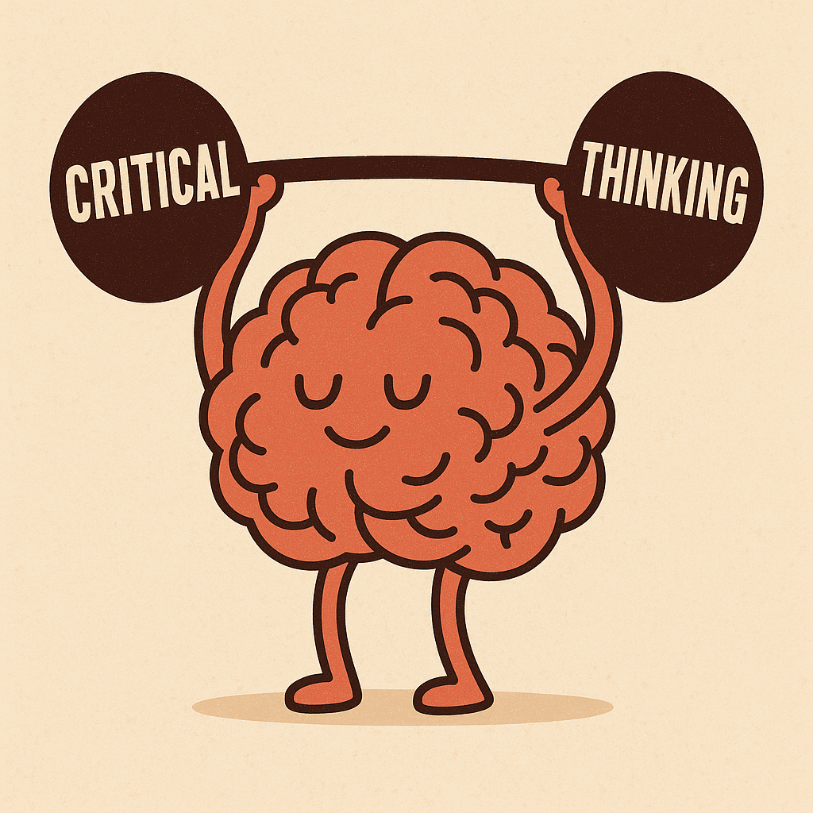

From Weak to Strong: Writing Better Study Limitations
Developing your critical analysis skills for discussion sections

Introduction
This worksheet helps you practice writing strong, specific limitations - a crucial skill for your practical report discussion sections.
You may have covered some of this material in your Week 5 tutorial. If so, this worksheet gives you extra practice. If you missed that session, don’t worry - everything you need is explained here.
The problem with generic critiques
Many students write limitations that could apply to almost any study:
- “The sample size was small”
- “It lacks ecological validity”
- “Only used university students”
- “Might not generalise to other populations”
These are generic critiques - they’re swappable between studies and don’t show real understanding.
What makes a strong critique?
Strong critiques are specific: they identify which aspect of the method might limit which conclusion, and explain why it matters.
Example:
Study: Loftus and Palmer showed participants videos of car accidents, then asked either “How fast were the cars going when they hit?” or “How fast were the cars going when they smashed?” Participants gave higher speed estimates with “smashed.”
Weak critique (generic): > “This study lacks ecological validity because participants watched videos rather than witnessing real accidents.”
Problem: The study isn’t trying to simulate real accidents - it’s testing whether question wording affects memory. Using videos doesn’t undermine that conclusion.
Strong critique (specific): > Participants estimated speed, rather than recalling specific details, and so the task may have encouraged guessing or social conformity. Rather than revealing genuine memory distortion, it’s possible that whether wording affects how people communicate uncertain judgements, rather than affecting their memory.” 1
What makes it stronger:
- Identifies what’s different (emotional involvement)
- Explains why it might matter (could affect suggestibility)
- Uses tentative language (“may affect”, “unclear whether”) rather than dismissing the findings
Language matters
Notice the type of language found in strong critiques:
- “may have encouraged”
- “it’s possible that”
- “could influence”
- “might not apply when…”
This acknowledges uncertainty, or the possibility that the finding doesn’t generalise, rather than dismissing the work entirely.
Part 1: Identifying weak and strong critiques
In your tutorial, you may have looked at 2-3 examples of weak and strong critiques. This section includes more practice.
Research critique examples - this page shows 8 research findings, each with two different critiques.
Your task:
- Open the critique examples page (link above)
- For each pair of critiques (Examples 1-8), decide:
- Which critique is generic (could apply to many studies)?
- Which is specific (identifies particular features)?
- Which is stronger? Why?
- Make notes on your answers
Tips as you work through the examples:
Look for critiques that:
- ✓ Identify specific methodological features
- ✓ Explain why those features might limit specific conclusions
- ✓ Use tentative, thoughtful language
- ✗ Avoid making generic complaints about samples, settings, or tasks
- ✗ Avoid dismissing findings without explaining why the limitation matters
Try the rest of the examples yourself!
- Decide which is the best critique for each example.
- Identify what makes it a strong critique
Part 2: Writing your own limitations
Now practice writing limitations as you would in a discussion section.
Study descriptions for critical analysis - this page describe 6 classic findings, including methodological details.
Your task:
For each study/finding (or just the ones you didn’t cover in your face to face tutorial):
- Read the study description carefully
- Think: What would you have written at A-level? (maybe something generic?!)
- Now identify: What aspect of the method might limit which conclusions we can draw from the study?
- Write 2-3 sentences describing specific limitations.
Remember:
- Avoid generic critiques (“small sample”, “lacks ecological validity”, “only students”)
- Be specific about what matters and why
- Use appropriate tentative language
- Don’t dismiss the findings - acknowledge them but identify genuine limitations
For each example, write 2-3 sentences identifying specific limitations using the same approach.
Self-assessment & Reflection
Read over the critiques you have written.
- Are they specific, or generic?
- Are they different to the sort of criticisms of studies you would have written at A-level?
- Are there ways in which they could be improved?
Get feedback on your work
Once you’ve completed your critique writing practice, you can get personalized feedback from Psybot.
Upload your written limitations for one or more of the studies. Psybot will review your work and provide feedback and suggestions for strengthening your critical analysis.
Footnotes
McCloskey, M., & Zaragoza, M. (1985). Misleading postevent information and memory for events: Arguments and evidence against memory impairment hypotheses. Journal of Experimental Psychology: General, 114(1), 1–16. https://doi.org/10.1037/0096-3445.114.1.1]↩︎